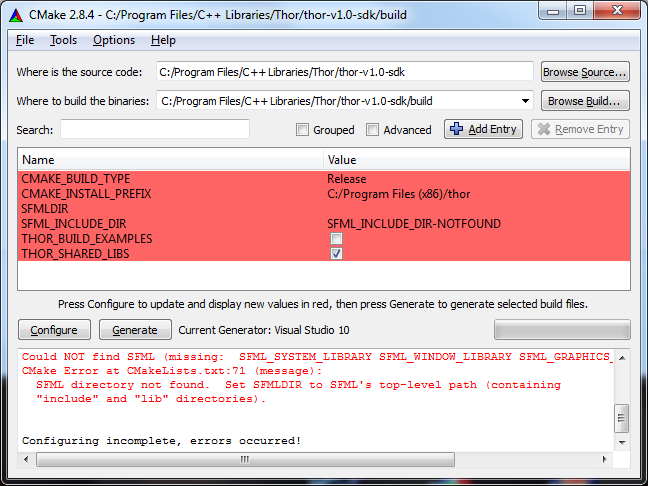
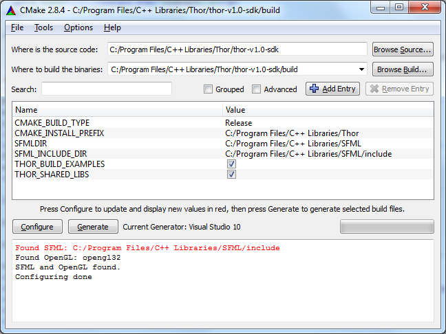

Installation Tutorial
In this tutorial, I try to teach you how to install Thor with the CMake build system and how to use it in your projects.
Compiling SFML
Before you are able to build Thor, SFML must be compiled. Make sure that you use a recent Git revision that is compatible with Thor, a Git snapshot is provided on the download site. Use CMake to build and install SFML, there is a tutorial on the official SFML page. This should also copy the FindSFML.cmake module into the CMake modules folder, which is required to find SFML.
Build the SFML configurations you like to use, and create static or dynamic libraries of the components system, window, graphics and audio.
Important: Do not only compile SFML, but also install it. For Visual Studio solutions, build the INSTALL project. Using (N)Make, execute make install or nmake install in the command line, respectively.
Configuring CMake
I guess you already know CMake since SFML uses it, but I show you some steps specific to this library.
After downloading the SDK from the download site or from the SVN repository, run CMake. Here, I will explain how to work with the graphical user interface (cmake-gui). Specify the source and build directory, click "Configure" and choose your generator. After configuring, this might happen:
There occurs an error because Thor needs SFML and doesn't know where it is. Just set the SFMLDIR variable to the directory path of SFML (the folder containing "include" and "lib"). Additionally, there are several options to customize:
- CMAKE_BUILD_TYPE – Either "Release" or "Debug"
- CMAKE_INSTALL_PREFIX – The directory which should contain the compiled libraries, include directories and maybe examples
- THOR_BUILD_EXAMPLES – Check the box if the example codes should be compiled
- THOR_SHARED_LIBS – Enable to build shared/dynamic libraries, disable to build static libraries
- THOR_STATIC_STD_LIBS – Enable to link compiler-specific CRT and standard libraries statically (usually not recommended)
Press "Configure". Your CMake window looks similar to the following image:

Click "Generate", go to the build directory and build the project.
Linking Thor
As soon as your libraries are built, you can use Thor in your projects. The generated libraries have the following naming scheme:
| Dynamic Linkage, Release | thor |
| Dynamic Linkage, Debug | thor-d |
| Static Linkage, Release | thor-s |
| Static Linkage, Debug | thor-s-d |
If necessary, add the library prefixes ("lib") and file extensions (".lib", ".dll", ".so") corresponding to your platform and compiler.
When you link statically, you have to add THOR_STATIC to your project's preprocessor definitions.